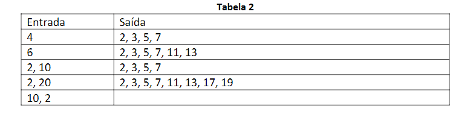

Na matemática um número é considerado primo se ele possuir apenas dois divisores, o número um e ele mesmo.
Para ajudar a gerar uma série de n números primos, crie uma função que ao recebero tamanho n retorne a
respectiva série de números primos, por exemplo, ao receber o valor 4 o retorno será 2, 3, 5, 7.
Contudo, se for recebido dois valores a interpretação será que a série deverá compreender o intervalo
desses valores, portanto, os valores 2, 10 resultaram em 2, 3, 5, 7.
Para analisar mais exemplos veja a Tabela 2.
